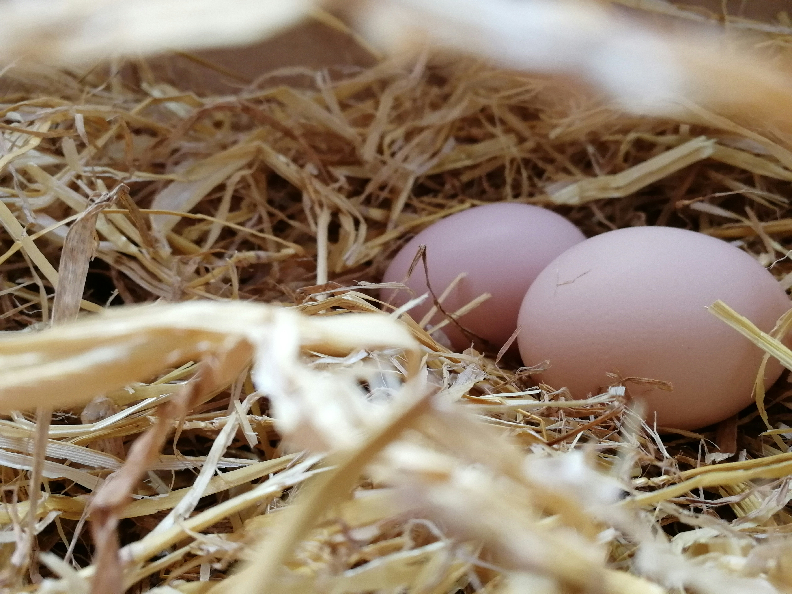

여름날, 오래된 영주의 저택 근처 우엉 잎 아래에서 어미 오리 한 마리가 알을 품고 있었다. 마침내 알들이 하나씩 갈라지고 새끼들이 태어났다. 하지만 유독 큰 알 하나만은 좀처럼 깨지지 않았다. 어미는 지쳐 가면서도 알을 계속 품었고, 마침내 마지막 알에서 새끼가 나왔다.

아기 오리는 다른 새끼들보다 몸집이 훨씬 크고 못생긴 회색 오리였다. 어미는 의아해하면서도 그를 자신의 새끼로 받아들였다. 다음 날, 어미는 모든 새끼를 데리고 호수로 향했다. 새끼 오리들은 물에 풍덩 빠졌다가 곧 헤엄을 치기 시작했다. 그 커다랗고 못생긴 회색 오리조차 물 위에서 능숙하게 움직였다.
“이런, 칠면조가 아니야. 발도 멋지게 잘 움직이네. 몸도 곧게 펴고. 어쨌거나 내 아들이야. 꽥, 꽥, 엄마한테 와라. 엄마가 세상으로 데리고 가서 오리 농장을 보여줄게.”
어미는 아기 오리가 다른 새끼들처럼 헤엄칠 수 있다는 사실에 안심했다. 하지만 농장에 도착하자마자 다른 오리들이 새로 태어난 새끼들을 구경하러 몰려들었다. 그들은 귀여운 새끼들을 칭찬하다가 마지막으로 나온 회색 오리를 보고는 얼굴을 찌푸렸다.
“여기 좀 봐요! 또 새끼들이 태어났나 보네. 여기 오리가 부족한 줄 아나? 게다가, 저런! 뭐 저렇게나 못생긴 오리가 다 있지! 못 봐주겠군.”